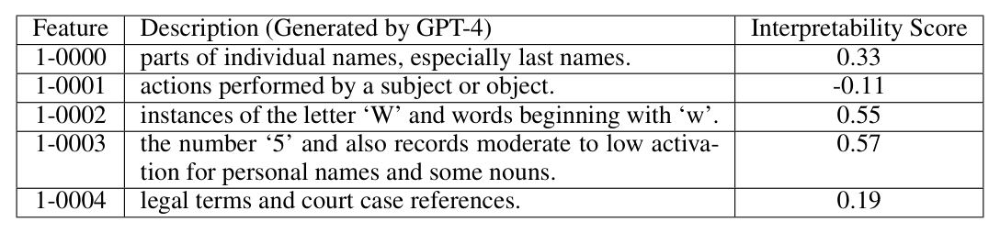

Layer-1 feature descriptions and interpretability scores

How to read this table
Each row is one dictionary feature from the layer-1 residual stream, identified by an index like "1-0000" (layer 1, feature 0). The "Description" column is not written by the paper's authors — it is the natural-language explanation GPT-4 generated after seeing text where that feature activates, under the Autointerpretability score procedure. The "Interpretability Score" is not a percentage or accuracy: it is a correlation between the activations that description predicts and the feature's true activations on held-out text, so it can run negative, as it does for feature 1-0001 (-0.11), meaning the description performed worse than no explanation at all. A high score means the description reliably predicts when the feature fires; it does not by itself mean the underlying concept is important or common. These five rows are not cherry-picked highlights — the paper states they are simply "the first five under the (arbitrary) ordering in the dictionary" (sparse-autoencoders, §"3.1 INTERPRETABILITY AT SCALE", p. 4), i.e., an unbiased sample of what a typical stretch of the dictionary looks like.
What the sample shows
Of the five features, most get a specific description and a positive score: parts of names (0.33), words starting with "w" (0.55), the digit "5" plus some names and nouns (0.57), and legal terms (0.19). One, feature 1-0001, gets a vague description ("actions performed by a subject or object") and a negative score, illustrating that even in a method whose average scores beat every baseline, individual features vary widely in how cleanly they can be captured by an automated explanation.
Role in the paper
Table 1 is a concrete, readable preview of the raw material behind the aggregate statistics presented next: the same Autointerpretability score procedure, applied here to five individual Dictionary features, is later averaged over hundreds of features per layer and compared against Principal Component Analysis (PCA), Independent Component Analysis (ICA), and other baselines. The explanations come from GPT-4 and are scored by simulating each feature's activations with GPT-3.5.